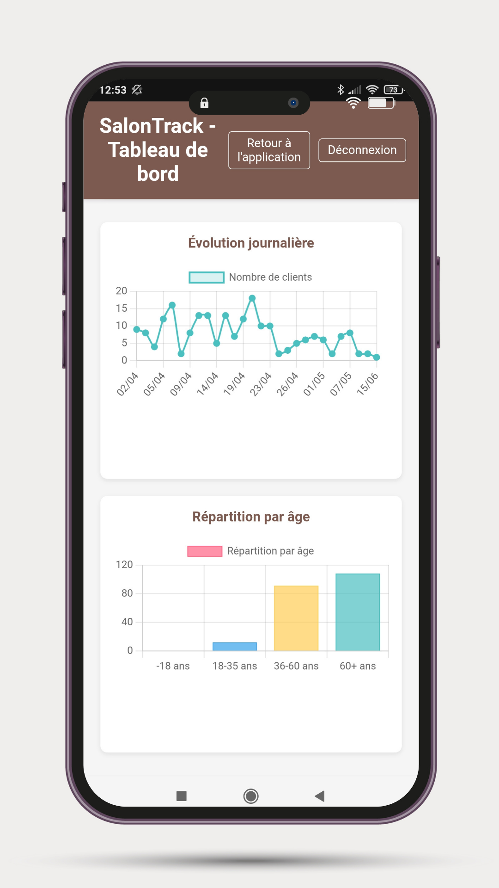
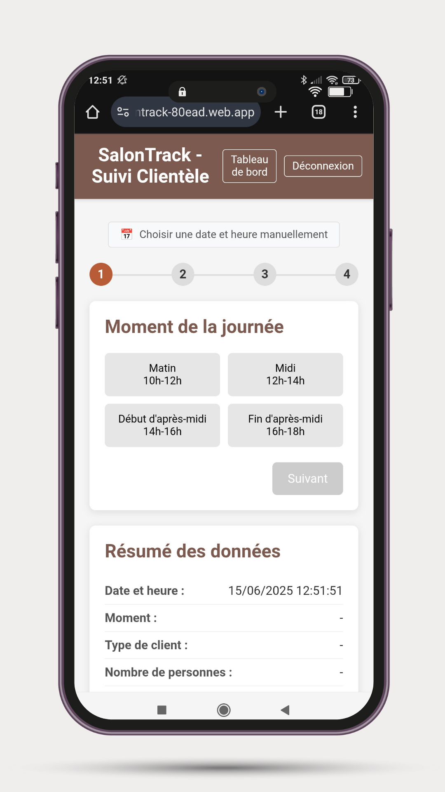
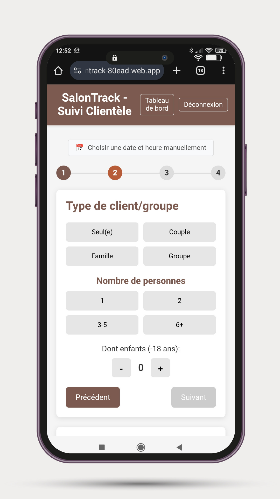
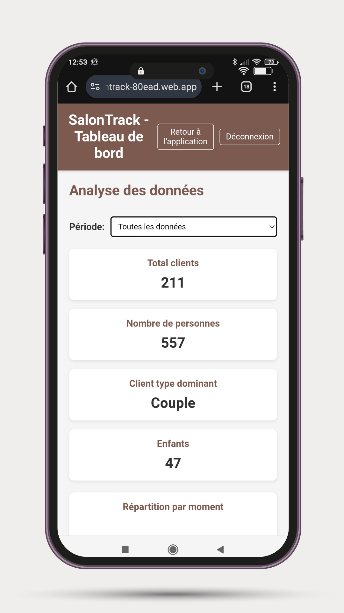

Évolution temporelle
Évolution temporelle et analyse démographique révélant les tendances de fréquentation

Répartition clients
Graphiques de répartition par moment de visite et types de clients avec légendes interactives
Développement d'une solution complète de collecte et d'analyse de données visiteurs, transformant les observations terrain en insights stratégiques pour optimiser l'expérience culturelle et les offres du salon de thé.
← Retour au portfolioDate: Juin 2025
Auteur: Richard Dufaur
Durée: 2 semaines de développement
Catégorie: Data Analyse • Application Web
Lors de ma prise de poste au Musée Colette en tant que guide, j'avais envie de mettre en pratique ce que j'avais appris pendant ma formation. Je me suis donc intéressé aux différents moyens d'optimiser la gestion du public et développer le côté data du musée. Le seul suivi des visiteurs se limitait à la vente de billets, ne permettant pas d'analyser les profils, comportements et préférences de la clientèle.
L'absence de gestion numérisée des clients, faute d'ordinateur ou de logiciels de caisse, m'a poussé vers la réalisation d'une application web. L'idée était de permettre aux salariés de l'accueil (c'est-à-dire moi-même) de saisir manuellement, à chaque nouvelle entrée dans le musée, les caractéristiques des visiteurs présents. Pour protéger l'accés à l'application et aux données, des comptes privés avec identifiants ont été créés.
J'avais le champ libre pour réaliser plusieurs tests et voir quelle valeur ajoutée on pouvait développer. J'ai lancé l'application sur un temps de 2 mois.
Identification des données manquantes et des contraintes terrain
Interface intuitive adaptée à un usage rapide par le personnel de l'accueil
Application web responsive avec base de données intégrée (Firebase)
Dashboard et rapports d'analyse personnalisés
J'ai conçu SalonTrack, une application web qui permet de saisir rapidement les caractéristiques des visiteurs en 4 étapes simples. Le processus capture l'essentiel : heure d'arrivée, type de client, nombre de personnes, présence d'enfants, tranche d'âge dominant, contexte de visite. Le but principal était de gérer rapidement l'entrée des visiteurs et la gestion de la billetterie.

Choix du moment de visite avec créneaux prédéfinis - Design optimisé pour un usage mobile

Sélection du type de client et nombre de personnes - Interface intuitive avec boutons larges
En quelques semaines d'utilisation, l'application a permis de collecter des données précieuses sur la fréquentation du musée et j'ai commencé à analyser l'ensemble. Ici, vous verrez des données de démonstration.

Dashboard principal affichant les métriques clés et le type de clientèle dominant
L'analyse révèle une clientèle majoritairement composée de couples (type dominant), avec une forte concentration sur les tranches d'âge 36-60 ans et 60+ ans. Les patterns de fréquentation montrent des variations significatives selon les moments de la journée, ouvrant de nouvelles perspectives pour l'optimisation des ressources, la personnalisation de l'accueil ou encore de nouvelles offres adaptées aux différents types de visiteurs.

Évolution temporelle et analyse démographique révélant les tendances de fréquentation
Graphiques de répartition par moment de visite et types de clients avec légendes interactives
Ce projet illustre parfaitement ma démarche : partir d'un besoin terrain concret, développer une solution technique adaptée, puis transformer les données collectées en insights actionnables.
Je suis très content de la mise en place de cette application web. J'ai pu me créer une expérience réelle de terrain et gagner en confiance dans mes compétences professionnelles. Vous trouverez ici une démonstration du travail que j'ai réalisé cette fois-ci sur les données du salon de thé du musée.